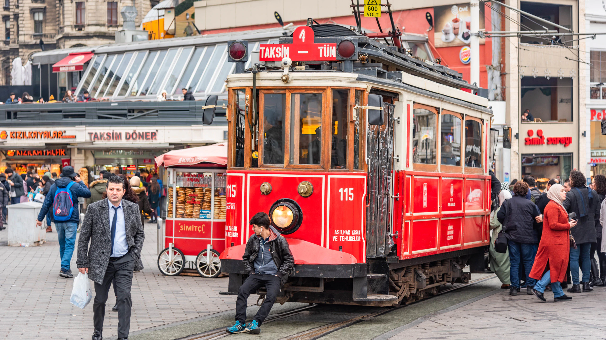
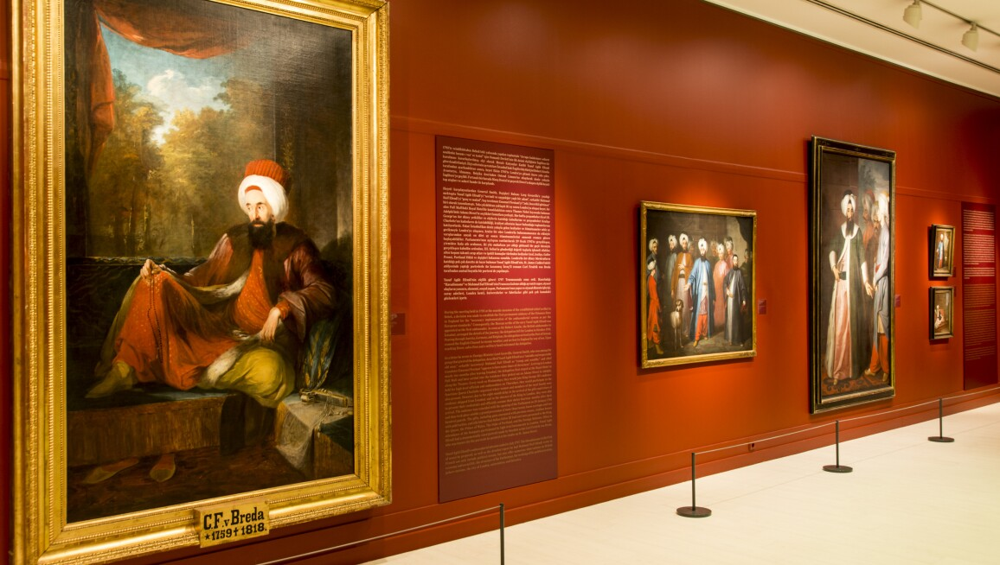

GIORNO 3
Quartiere di Beyoglu e Museo Pera
|
Cari viaggiatori, oggi ci sposteremo nel cuore pulsante della moderna Istanbul, il Quartiere di Beyoglu. Questa zona vibrante e cosmopolita è il luogo ideale per immergersi nella vivace scena artistica e culturale della città. Attraverso le sue strade animate e i suoi caffè storici, avremo l'opportunità di scoprire l'anima creativa di Istanbul e di interagire con gli artisti e gli intellettuali che popolano questa vivace enclave urbana. |
|   |
Nel pomeriggio, ci dirigeremo al Museo Pera, un'istituzione culturale di grande prestigio che ospita una ricca collezione d'arte moderna e contemporanea. Qui, tra le opere di artisti rinomati e emergenti, avremo l'opportunità di esplorare le influenze del Rinascimento e dell'arte mediterranea sulla scena artistica contemporanea di Istanbul, aprendo una finestra sulla complessità e la ricchezza della cultura turca moderna.